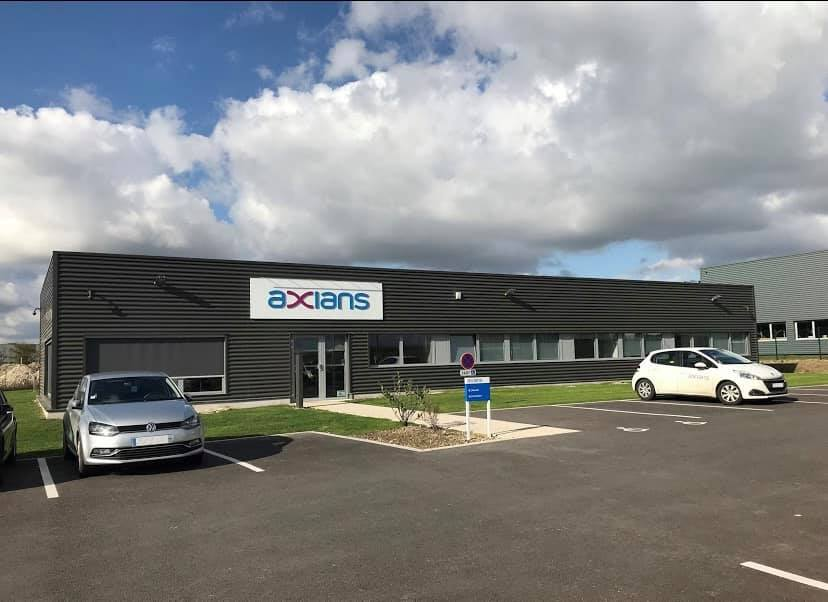

Rapport de stage de 2ème année
Chez Axians Amiens
Vinci Energies
Contenu de mon stage :
Pour des raisons de confidentialité, j'ai préféré anonymiser les structures et les entreprises mentionnées dans les missions décrites ci-dessous.
Envoi de Matériel
Pour une agence immobilière, j'ai assuré l'enregistrement, le titrage, le cerclage et l'envoi de 65 postes Yealink avec modules et 170 cordons, répartis sur 11 villes.
Pour une entreprise de formation, j'ai procédé à l'enregistrement, au titrage, au cerclage et à l'envoi d'une trentaine de switchs Aruba, répartis sur trois secteurs.
J'ai également pris en charge le titrage, l'emballage et le cerclage de switchs, points d'accès (AP) et divers cordons pour différentes structures.
Affichage des Écrans
Lors de l'installation et de la configuration d'écrans, j'ai réalisé plusieurs interventions :
- Changement d’authentification grâce à la Rescue de mot de passe avec GRUB.
- Localisation et modification du mot de passe sur trois mini PCs associés aux écrans en question.
- Changement de branchement pour assurer le bon affichage vidéo.
- Diagnostic de la connexion des écrans en Wi-Fi (problème identifié : pare-feu).
- Changement de gestionnaire des écrans et configuration de VNCServer sur les trois mini-PC (essai sans succès, gestionnaire actuel conservé).
Participation au Déploiement sur Site Client
J'ai participé à plusieurs projets de déploiement sur site :
- Déplacement dans une caserne de police pour le remplacement intégral de la téléphonie IP, avec l'installation et la configuration de 77 postes Cisco.
- Intervention dans une mairie pour la mise en place de switchs en parallèle.
Préconfiguration d'Équipements en Atelier
En atelier, j'ai pris en charge la préconfiguration de divers équipements :
- Configuration de base (VLANs, etc.) d'un switch Fortinet 60D via l'interface graphique (GUI).
- Configuration de base (VLANs, balises, etc.) d'un switch Aruba 6000 via l'interface en ligne de commande (CLI).
- Configuration du service DHCP, des VLANs sur les ports et de l'accès VLAN maquette WAN1 sur un Fortigate 60D en GUI.
- Configuration d'interphone via GUI (adressage IP).
- Vérification de la configuration des cartes GD d'un système de téléphonie OmniPCX.
- Vérification de l'état d'un switch Wildix (problème de ventilation identifié, remplacement des ventilateurs commandé).
J'ai également configuré des templates et enregistré des équipements Aruba, dont :
- 3 switchs châssis 5406R et 27 switchs 6100 (12 de 24 ports, 5 de 12 ports, 10 de 48 ports) via GUI.
- Planification et enregistrement de 128 points d'accès (AP) sur Aruba Center, avec gestion des emplacements, noms, adresses MAC et BOM.
Enfin, j'ai géré la configuration de trois Forti 100D via GUI. Suite à des complications lors du reset, ces derniers ont été remplacés par deux Forti 70G et un Forti 50G.
J'ai également procédé au reset de trois AP Cisco et tenté le changement de firmware via reset pour trois caméras Risco vers Dahua (deux sur trois réussis).
Audit d'Installations
Lors d'audits techniques, j'ai réalisé plusieurs interventions :
- Déplacement dans une DSI de mairie pour une mise à jour générale et une vérification de l'adressage et des équipements réseaux de la métropole.
- Vérification et mise à jour de la conformité des synoptiques physiques et logiques du réseau informatique (notamment MPLS).
- Réalisation d'audits à distance d'installations d'équipements dans l'agglomération.
- Audit Wi-Fi au Parc Astérix.
- Vérification d'un problème de sécurité physique lié au dysfonctionnement d'un équipement réseau chez une structure de transport en commun.